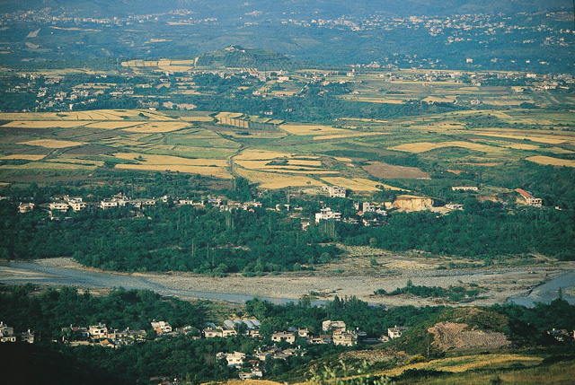

| Dörtyol |
- Dörtyol
- Tarihçe
- Coğrafya
- Nüfus
- Eğitim Durumu
- Ekonomi
 |
Ülke |
Türkiye |
| İl |
Hatay |
| Coğrafi Bölge |
Akdeniz |
| Yüzölçümü |
342 km2 |
| Rakım |
4 m |
| Posta Kodu |
31600 |
| İl Alan Kodu |
0326 |
| İl Plaka Kodu |
31 |
 |
Dörtyol'da bir çok tarihi yerleşmeler ve kalıntılar bulunmaktadır. M.Ö. 5 bin ile 50 yılları arasında aktif bir yerleşme yeri olan Kinethöyük bunlardan en eski olanıdır. Bölge M.Ö. 3000 yıllarından bu yana Akad ve Sümerlerden başlayarak M.S. 1. - 3. y.y.' da Roma ve Bizanslı'lara kadar bir çok devlet ve medeniyetin egemenliği altında kalmıştır. M.Ö. 333 de Helen İmparatoru İskender ile Pers kralı 3. Darius arasında yapılan İssos Savaşı'nın Deliçay (Pinaros) ile deniz kenarındaki bir yerde yapıldığı belirtilmektedir. Dörtyol'un kuruluş yılları 11. yüzyılın sonlarına dayanmaktadır. 1338 yılında Memlüklerin Çukurova'yı fethinden sonra Üç Oklu Türkmen Boyları içinde bulunan Özerler' in Özerli ve Ocaklı‘ mahallelerine yerleştikleri tespit edilmiştir. 22 Aralık 1909'da, padişah iradesiyle Dörtyol adıyla Adana vilayeti, Cebel-i Bereket Sancağı'na bağlı kaza merkezi olmuştur. Mondros ateşkes antlaşmasından sonra 11 Aralık 1918'de işgal edilen Dörtyol'da Milli Mücadele'de İLK KURŞUN 19 Aralık 1918'de Karakese köyünde Özerlili Hoca Ömer oğlu Mehmet Çavuş (Mehmet Kara ) tarafından atılmıştır. Bu olaydan birkaç gün sonra Kara Hasan Paşa tarafından da Milli Mücadele'nin ilk Kuvva-yı Milliye örgütü Dörtyol'da kurulmuştur. Fransız ve Ermenilerle yapılan mücadele sonucunda 9 Ocak 1922'de Dörtyol düşman işgalinden kurtarılmıştır. Gazi Mustafa Kemal ATATÜRK 14 Ocak 1925, 16 Mayıs 1926 ve 15 Şubat 1931 tarihlerinde olmak üzere toplam 3 defa Dörtyol' umuza teşrif etmişlerdir. 07 Temmuz 1939 yılına kadar Seyhan'a (ADANA) bağlı olan Dörtyol, Hatay'ın anavatana katılmasıyla bu ilimize bağlanmıştır. Kurtuluş Savaşı'nın anısını yaşatmak üzere "İLK KURŞUN ANITI" 9 Ocak 1994'de, "İLK KURŞUN MÜZESİ" ise 9 Ocak 2014'de açılmıştır.
|
Akdeniz Bölgesinin doğusunda 36.9250 ve 36.8050 Kuzey paralelleri ile 36.0750 ve 36.3000 Doğu meridyenleri arasında yer alan Dörtyol’un ;Doğusunda Amanos dağları ve Hassa,güneyinde Payas,batısında İskenderun Körfezi,kuzeyinde ise Erzin ilçesi bulunmaktadır. Tipik Akdeniz iklimi görülen , 70 m rakımlı ilçemiz, ülkemizde Rize ilinden sonra en fazla yağış alan merkezlerden olup nispi nem ortalaması % 48,3 tür. En çok yağışı Şubat, Mart, Nisan ve Aralık aylarında, en az yağışı ise Ağustos ayında almaktadır. (2013 yılında metrekareye düşen toplam 899,02 mm. ) 2013 yılı sonu itibarıyla sıcaklık en yüksek 43,2 °C en düşük 2,00 °C olmuştur. İlçemizde en düşük sıcaklık –7,0 °C olarak 1985 yılında gerçekleşmiştir. İlçenin yüzölçümü 342 Km² dir.
 |
|
İlçenin 2012 yıl sonu itibariyle ilçenin nüfus sayımı sonuçlarına göre toplam nüfusu 151.837'dir. İlçe merkezi nüfusu ise 75.110'dur. İlçeye bağlı 6 köyde toplam 5.451 kişi yaşamaktadır. Yeni idari yapı ile oluşan belde belediyeleri altıya yükselmiş olup, toplam nüfusları 76.727'dir. İlçe genel nüfusunun %47'si ilçe merkezinde %49'u belde belediyelerinde ve %4'ü ise köylerde yaşamaktadır. Çalışan nüfusun genel nüfus içindeki oranı %30'dur. Çalışan nüfusun meslek gruplanna göre %20'si memur, %40'ı sanayi kolunda çalışan işçi, %15'i esnaf ve serbest meslek erbabı ve %25'i ise tarım kolunda çalışmaktadır.
| Yıl |
Toplam |
Şehir |
Kır |
| 1965 |
48.275 |
11.595 |
36.680 |
| 1970 |
56.949 |
12.947 |
44.002 |
| 1975 |
93.190 |
19.390 |
73.800 |
| 1980 |
111.832 |
25.905 |
85.927 |
| 1985 |
129.299 |
30.722 |
98.577 |
| 1990 |
111.368 |
47.144 |
64.224 |
| 2000 |
126.258 |
53.597 |
72.661 |
| 2007 |
140.517 |
66.082 |
74.435 |
| 2008 |
143.914 |
67.430 |
76.484 |
| 2009 |
145.846 |
69.507 |
76.339 |
| 2010 |
147.629 |
70.856 |
76.773 |
| 2011 |
149.471 |
72.769 |
76.702 |
| 2012 |
151.837 |
75.110 |
76.727 |
| 2013 |
115.251 |
115.251 |
veri yok |
| 2014 |
117.053 |
117.053 |
veri yok |
|
|
İlçede ilk olarak 1911 yılında merkeze bağlı Özerli Mahallesinde şimdiki adı ile Nurettin Baransel İlkokulunun açıldığı tespit edilmiştir. Bugün ise tüm yerleşim birimleri okula kavuşmuştur. İlçede okuma yazma oranı %98'e tekabül etmektedir. Okul öncesi eğitimi çağ nüfusuna göre oranı %17.5'e tekabül etmektedir. İlçeye ait istatistiki bilgiler aşağıdaki gibidir:
- İlkokul ve Ortaokul 44
- Genel ve Mesleki Lise 12
- Anaokulu(Bağımsız) 4
- Özel ilköğretim Okulu 2
- Spor ve izcilik Okulu 1
- Toplam Derslik Sayısı 881
- İlçemizdeki Öğrenci Sayıları
- Okul öncesi 1.494
- İlkokul ve Ortaokul 22.755
- Lise ve Dengi Okullar 7.996
- Özel Lise 103
- Özel İlkokul-Ortaokul 537
- Toplam Öğrenci Savısı 32.885
- İlçemizdeki Öğretmen Sayıları
- Sınıf Öğretmeni 484
- Branş Öğretmeni 886
- Okul Öncesi Öğretmeni 40
- Toplam Öğretmen Sayısı 1.410
|
 |
| Türkiye'de narenciye üretimi mandalinası ve portakalı ile ünlüdür. Sebze ve meyve çiftçiliği yapılır. Son yıllarda zeytin tarımı da yapılmaya başlamıştır. Payas Beldesinde bulunan İskenderun Demir-Çelik Fabrikası büyük istihdam kaynağıdır. Payas çevresindeki fabrikalar, Dörtyol ve çevresindeki işletmeler halkın geçim kaynağıdır. |
|

|

|
|
|